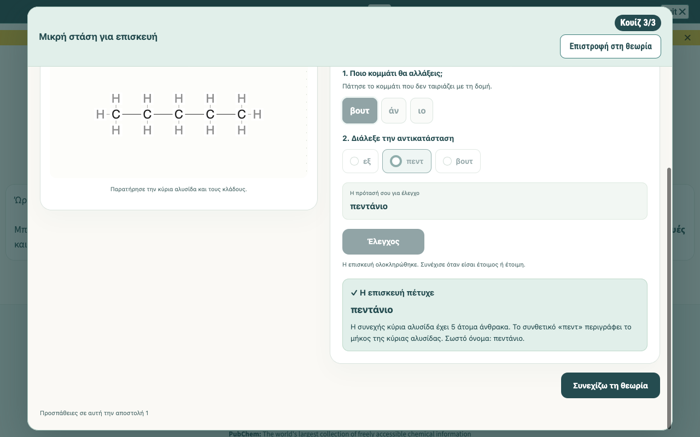
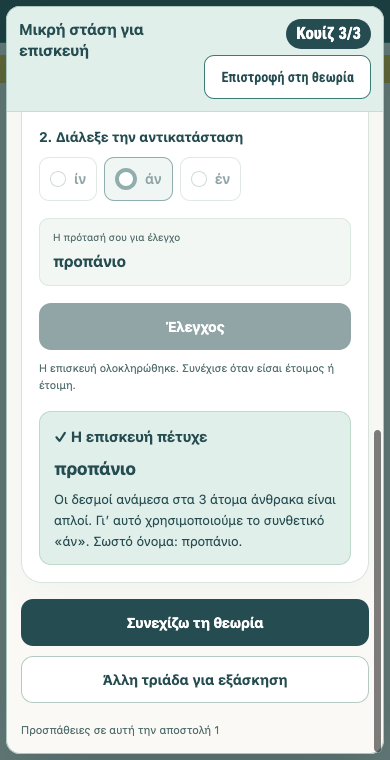
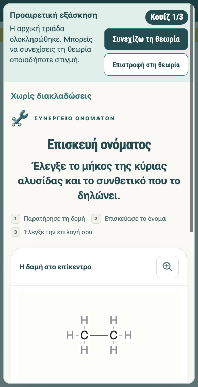
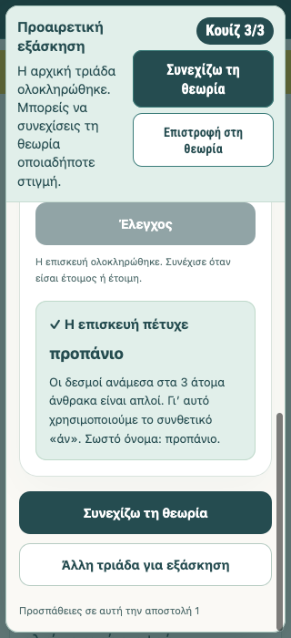
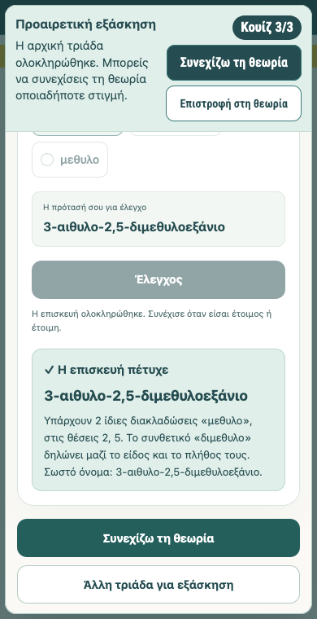
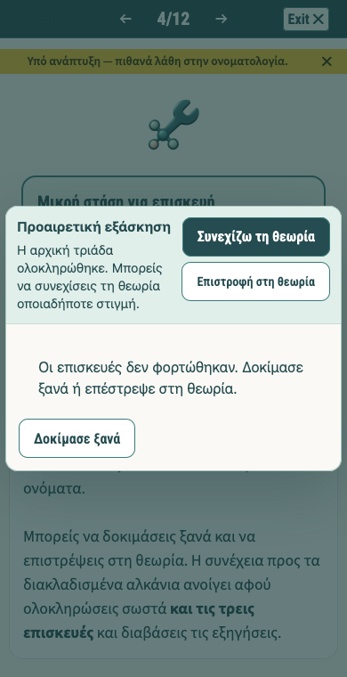

Προαιρετικές επιπλέον τριάδες στο μάθημα αλκανίων
Πραγματικά στιγμιότυπα από απομονωμένο Firefox. Η αρχική υποχρεωτική επιτυχία διατηρείται και ανοίγει προαιρετική εξάσκηση με συνέχεια της θεωρίας οποιαδήποτε στιγμή.
Άνοιγμα κανονικού τοπικού μαθήματος στο βήμα 4Κανονικό μάθημα με τον έλεγχο προόδου του· ο σύνδεσμος δεν προσθέτει επιτυχίες.

Πριν: μόνο «Συνεχίζω τη θεωρία».Ακριβές ιστορικό receipt πραγματικών επιτυχιών, επαληθευμένο από την παλιά μηχανή· δεν δηλώνεται νέα εκτέλεση των προαπαιτουμένων.

Μετά: δύο επιλογές μετά την αρχική επιτυχία.Η υποχρεωτική τριάδα ολοκληρώθηκε πραγματικά σε αυτή τη δοκιμή.

Προαιρετική τριάδα, κουίζ 1/3.Εμφανές προαιρετικό πλαίσιο, διατήρηση της αρχικής επιτυχίας και κουμπί συνέχειας.

Πλάτος 320px: ολοκλήρωση προαιρετικής τριάδας.Η συνέχεια και η νέα τριάδα χωρούν χωρίς επικάλυψη.

Δεύτερο checkpoint: προαιρετική τριάδα με διακλαδώσεις.Πραγματικές προαιρετικές απαντήσεις· τα προαπαιτούμενα προήλθαν από ακριβές ιστορικό επαληθευμένο receipt.

Συνέχεια ακόμη και σε αποτυχία προετοιμασίας.Ελεγχόμενο test fixture στο απομονωμένο περιβάλλον, χωρίς αλλαγή αρχείων εφαρμογής.
Περιορισμένη τεκμηρίωση των ελεγμένων ροών και διαστάσεων. Δεν αποτελεί δοκιμή φυσικού κινητού, Safari, προβολέα ή συνεδριακού μηχανήματος, ούτε εγγύηση αδιάκοπης λειτουργίας.